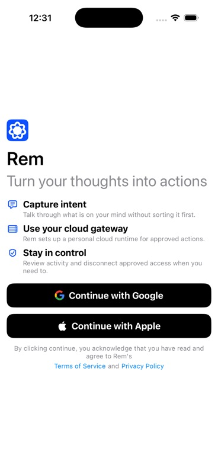
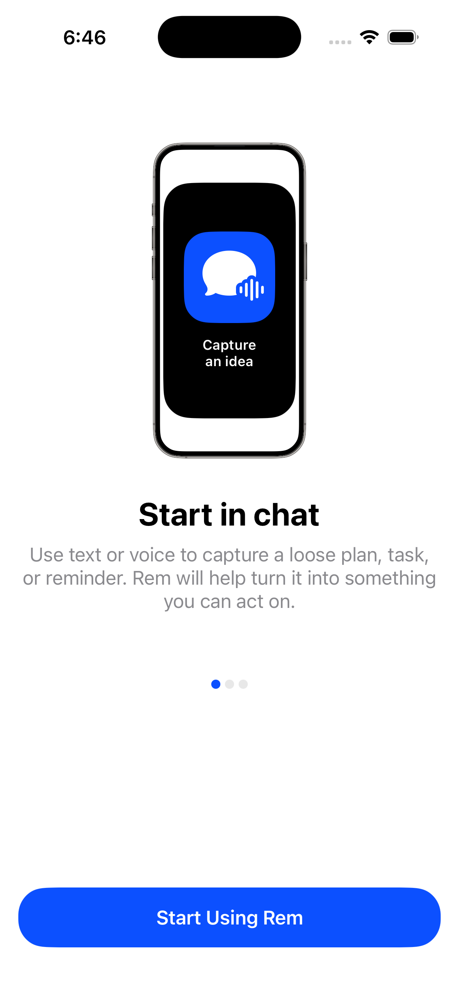
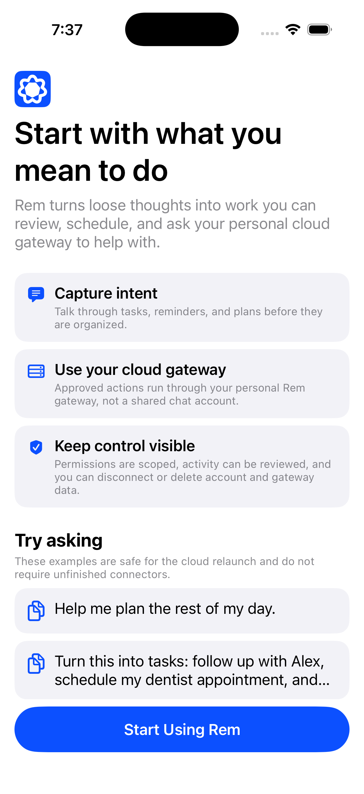

01
Start with the value
Capture intent, use a personal gateway, and remain in control.
Onboarding

01
Capture intent, use a personal gateway, and remain in control.

02
Text or voice can turn a loose thought into something actionable.

03
Approved actions run through the user’s gateway and remain reviewable.